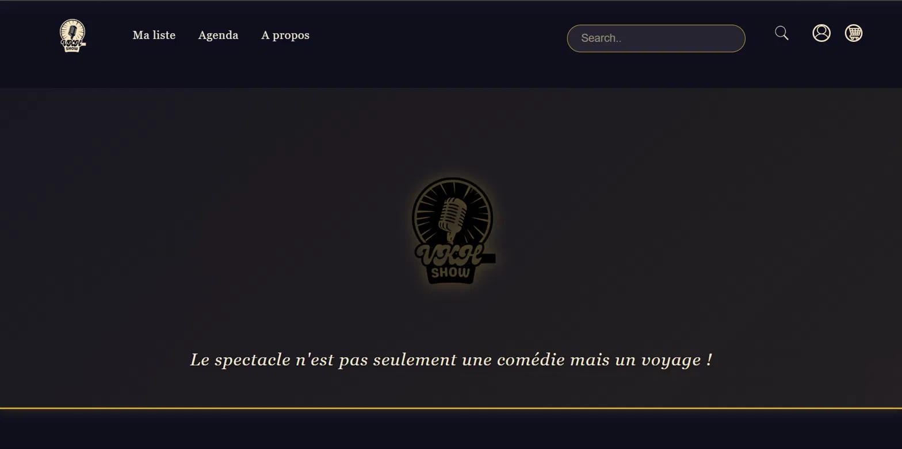

DAVINCI Custom Garage
Technical lead
A connected smart parking system: online reservation, QR-code access control, automated barrier and live occupancy detection, built as a working physical prototype.
Five projects, from a static page written in my first weeks to a connected system running across a web platform and physical hardware. Each page describes what the project had to solve, what I did, and what went wrong along the way.
Technical lead
A connected smart parking system: online reservation, QR-code access control, automated barrier and live occupancy detection, built as a working physical prototype.

Sole developer
A commercial website for a cleaning company, rewritten from static HTML into a Symfony application with a database-driven service catalog and two server-validated forms.

Pipeline implementation
A processor simulator in C running a 4-stage pipeline cycle by cycle, with hazard detection and forwarding.

Backend and frontend contributor
A ticketing platform for live shows: account creation, authentication, browsing, reservation and a role-protected administration interface.

Solo project
A static showcase site built with HTML and CSS only. My first front-end project, and where I learned how a browser actually resolves a path.